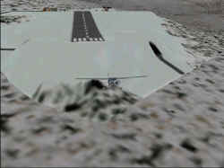

Courchevel
2000
von den Reiffer Bros.
getestet von Felix Dudek
Nach der Schließung von Hongkongs
Flughafen Kai Tak war bei Piloten und
Luftfahrtfreunden in aller Welt erst
mal Trübsal blasen angesagt. Wo sonst
konnte man solche spektakulären
Approaches erleben und fliegen? Dabei
war Kai Tak mit seinem
berühmt-berüchtigten IGS 13 noch
nicht einmal die Spitze des Eisbergs.
Nicht minder aufregend ist nämlich
Courchevel, der am höchsten gelegene
Flugplatz Europas.
 Die
Reiffer Brüder, sozusagen fast
Urgesteine in der FS-Szene, haben es
sich nun zur Aufgabe gemacht, diesen
außergewöhnlichen Platz
nachzubilden.
Die
Reiffer Brüder, sozusagen fast
Urgesteine in der FS-Szene, haben es
sich nun zur Aufgabe gemacht, diesen
außergewöhnlichen Platz
nachzubilden.
Mit seiner 500 Meter kurzen und
steil abfallenden Runway ist er nur
was für Profis. Courchevel Airport
liegt auf einem knapp 2000 Metern
hohen Bergplateau in den
französischen Alpen. Das hat zur
Folge, dass man eigentlich wie auf
einem Flugzeugträger sitzt, denn nach
dem Start fällt der Berghang
dramatisch ab und macht einem tiefen
Tal Platz. Haut es mit dem
"Anlauf" da nicht ganz hin,
gibt's schöne Schweißausbrüche.
Außerdem sollte man sich schon ein
wenig mit der Gemischverstellung bei
Props auskennen, denn durch die
extreme Höhe ist bei einem Setting
von unter 80 Prozent Sendepause. Ein
Fehler, den man nur einmal macht.
 Besonders
interessant wird aber die Landung.
Denn die muss sauber kalkuliert sein.
Durch die Höhe der umliegenden
Berggipfel ist ein "straight
approach" unmöglich, man hat
also ganz schön zu kurbeln, bis man
einigermaßen auf Landebahnkurs ist.
Auf Grund der Neigung der Landebahn
hat man auch am Anfang Probleme, eine
saubere Landung hinzukriegen. Entweder
man kommt zu schnell rein und kracht
mit der Nase förmlich in den Asphalt
oder man lässt die Maschine so lange
aushungern, bis sie ewig über dem
Boden schwebt und somit wertvoller
Platz zur Landung verschenkt wird. Ich
brauchte knapp 20 Versuche, bis es
einigermaßen elegant aussah.
Besonders
interessant wird aber die Landung.
Denn die muss sauber kalkuliert sein.
Durch die Höhe der umliegenden
Berggipfel ist ein "straight
approach" unmöglich, man hat
also ganz schön zu kurbeln, bis man
einigermaßen auf Landebahnkurs ist.
Auf Grund der Neigung der Landebahn
hat man auch am Anfang Probleme, eine
saubere Landung hinzukriegen. Entweder
man kommt zu schnell rein und kracht
mit der Nase förmlich in den Asphalt
oder man lässt die Maschine so lange
aushungern, bis sie ewig über dem
Boden schwebt und somit wertvoller
Platz zur Landung verschenkt wird. Ich
brauchte knapp 20 Versuche, bis es
einigermaßen elegant aussah.
 Martin
und Benedikt Reiffer haben es
hinbekommen, diesen unüblichen
Flughafen perfekt zu reproduzieren.
Mit Hilfe von unzähligen Fotos und
einem ehemaligen Dash-7 Kapitän der
Tyrolean Airways wurde Courchevel bis
ins kleinste Detail nachgebildet. Die
Reiffers haben dabei besonders auf die
Einhaltung der alpinen Atmosphäre
geachtet. Eine etwas größere
Berghütte dient als Terminal, von
dessen angeschlossenem Café man
gleich mal die Bergregion bewundern
kann. Die aufgetragenen Texturen
wirken fotorealistisch, erreichen aber
nicht ganz die Klarheit der Airport
2000 Gebäude. Zu den Bergen gehören
natürlich auch die Kühe, die
tatsächlich als statische Objekte an
den Hängen grasen. Eine Vielzahl von
Bäumen "belebt" die
Umgebung, nichts wirkt nackt und kahl.
Martin
und Benedikt Reiffer haben es
hinbekommen, diesen unüblichen
Flughafen perfekt zu reproduzieren.
Mit Hilfe von unzähligen Fotos und
einem ehemaligen Dash-7 Kapitän der
Tyrolean Airways wurde Courchevel bis
ins kleinste Detail nachgebildet. Die
Reiffers haben dabei besonders auf die
Einhaltung der alpinen Atmosphäre
geachtet. Eine etwas größere
Berghütte dient als Terminal, von
dessen angeschlossenem Café man
gleich mal die Bergregion bewundern
kann. Die aufgetragenen Texturen
wirken fotorealistisch, erreichen aber
nicht ganz die Klarheit der Airport
2000 Gebäude. Zu den Bergen gehören
natürlich auch die Kühe, die
tatsächlich als statische Objekte an
den Hängen grasen. Eine Vielzahl von
Bäumen "belebt" die
Umgebung, nichts wirkt nackt und kahl.
 Apropos
belebte Umgebung: was Martin und
Benedikt an statischer und dynamischer
Szenerie gezaubert haben, hat mich
doch etwas ins Staunen gebracht. Ich musste
zweimal hingucken, bis ich
tatsächlich laufende Menschen
erblickte. Ja, neuerdings sind nicht
nur Busse und Flugzeuge zur
dynamischen Szenerie zu zählen,
sondern auch Personen, die auf dem
Flugplatz rumspazieren. Ein neuer Weg,
den die beiden Brüder da beschritten
haben, der sicherlich Schule macht.
Allerdings hätte ich mir das eine
oder andere Flugzeug gewünscht, das
über dem Airport kreist. Aber auch
ohne Dynamik ist ganz schön was los.
Eine Unmenge an Flugzeugen und
Menschen bevölkert das Vorfeld,
Kisten stehen rum, Piloten machen
ihren Outside Check. Stellt man die
Jahreszeit auf Winter, kommen
zusätzlich noch einige Skifahrer ins
Spiel. Bemerkenswert ist, dass die
statischen Objekte, die ja in wahren
Massen in Courchevel auftauchen, kaum
einen Einfluss auf die Framerate
haben. Ein Umstand, der gerade im
FS2000 viel Wert ist.
Apropos
belebte Umgebung: was Martin und
Benedikt an statischer und dynamischer
Szenerie gezaubert haben, hat mich
doch etwas ins Staunen gebracht. Ich musste
zweimal hingucken, bis ich
tatsächlich laufende Menschen
erblickte. Ja, neuerdings sind nicht
nur Busse und Flugzeuge zur
dynamischen Szenerie zu zählen,
sondern auch Personen, die auf dem
Flugplatz rumspazieren. Ein neuer Weg,
den die beiden Brüder da beschritten
haben, der sicherlich Schule macht.
Allerdings hätte ich mir das eine
oder andere Flugzeug gewünscht, das
über dem Airport kreist. Aber auch
ohne Dynamik ist ganz schön was los.
Eine Unmenge an Flugzeugen und
Menschen bevölkert das Vorfeld,
Kisten stehen rum, Piloten machen
ihren Outside Check. Stellt man die
Jahreszeit auf Winter, kommen
zusätzlich noch einige Skifahrer ins
Spiel. Bemerkenswert ist, dass die
statischen Objekte, die ja in wahren
Massen in Courchevel auftauchen, kaum
einen Einfluss auf die Framerate
haben. Ein Umstand, der gerade im
FS2000 viel Wert ist.
 Besonders
schön wirkt natürlich alles, wenn
die Sonne langsam hinter den Bergen
versinkt und man im verschneiten
Courchevel gelandet ist. Dann möchte
man am liebsten in der Airport-Kneipe
einen Grog verputzen - passt ja auch
gut zur derzeitigen Witterung.
Besonders
schön wirkt natürlich alles, wenn
die Sonne langsam hinter den Bergen
versinkt und man im verschneiten
Courchevel gelandet ist. Dann möchte
man am liebsten in der Airport-Kneipe
einen Grog verputzen - passt ja auch
gut zur derzeitigen Witterung.
Das Dokumentationsmaterial ist
ausreichend, eine HTML-Datei mit
allgemeinen Infos und einer Approach/Departure
Chart liegt bei. Preislich gesehen
liegt Courchevel 2000 eher im oberen
Mittelfeld. Knapp 15 Dollar sind beim
derzeitigen Kurs auch knapp 30 Mark -
für einen einzelnen Flughafen ist das
etwas zu viel. Sieht man natürlich
den Aufwand, relativiert sich das
Ganze ein wenig, aber Bauchschmerzen
habe ich immer noch. Nichtsdestotrotz
habe ich den Ausflug in die Alpen
richtig genossen. Courchevel ist
vielleicht nicht ganz ein "Must
have", aber dennoch eine
Investition wert.


{kind=link}
{kind=link}